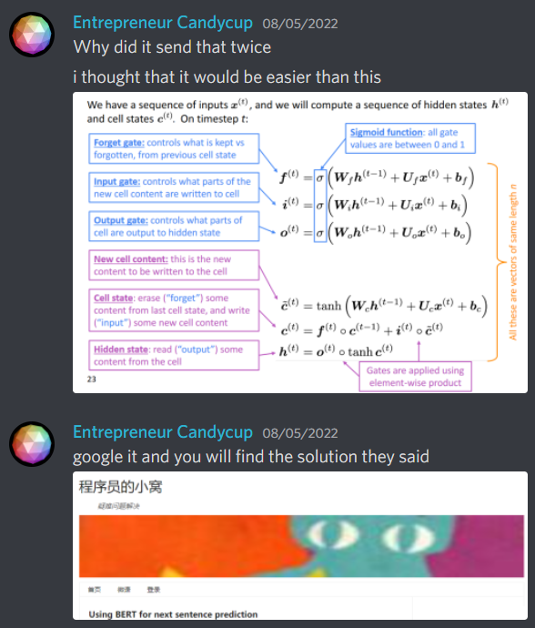
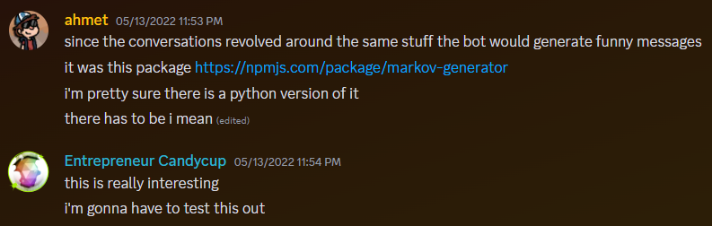

The making of Godisbot & co.
Godisbot was the first Twitter bot I ever made. And apparently like the only good concept I had for one, because i made like 6 of them just for fun.
In this post, I'll explain how it worked.
Backstory
How do you even create an AI that replicates one's behavior? Well, in an age before ChatGPT, I had to embark on a research adventure.

Somehow, I hadn't actually realized that what I was doing was pretty difficult. Especially when I didn't have any experience working with AI.
Thanfully there's a lot of smart people out there! After a while, I stumbled into Recurrent Neural Networks.
This tech would allow me to create the first version of Godisbot.
The How
Now, I had to get a dataset of Godis' tweets. I used this free tool to download all the tweets (sidenote: the app had to shut down following Musk's Twitter botcalypse) to an excel file, which I then parsed using a python script.
After that, the data had to be parsed to remove all @mentions. I didn't want the bot to be really annoying.
Now, to the training! I found a tutorial on how to generate text using RNN. I trained the model on Google Colab, and dumped like 1000 tweets into a text file. I thought that hosting the model with the bot was an inefficient way to do it, so I just dumped the tweets into a text file.
And then, I launched it. What followed was a series of embarassing technical failures that caused the bot to tweet out duplicate tweets, tweet at the wrong times, and sometimes it just wouldn't do anything. For days at a time.
I kept maintaining the bot, but I didn't really care that much about improving it. It was a technical nightmare, and I just didn't see any point in re-doing it.
Godisbot v2
Godisbot's tweets were really wacky. They didn't really resemble godis' tweets, but they were funny nevertheless. But that was about to change.
Ahmet, dubbed by some as "The Best Person Ever", introduced me to Markov Chains.

This was a game changer. After implementing the changes, godisbot as we know it was born.
What the hell does that mean you tell me I have STDs, we are Quitting You tube ! DUDE .........
— Godisbot (@godisbot) November 1, 2022
You seem to have sex
— Godisbot (@godisbot) May 29, 2022
After this, I created a couple spin-offs for my friends. But yeah. That's about it i think. And everyone lived happily ever after. jk i just shut them all down at some point
Q: Why did you make this?
A: I was bored.
Q: How did you host it?
A: Heroku.
Q: What was its best tweet in your opinion?
A: BIG SOG FOV! GOG SSMAS!!
i want a leviathan bot that tweets stuff like this https://t.co/WJndOZA77m
— Levi (@leviatwo) May 13, 2022